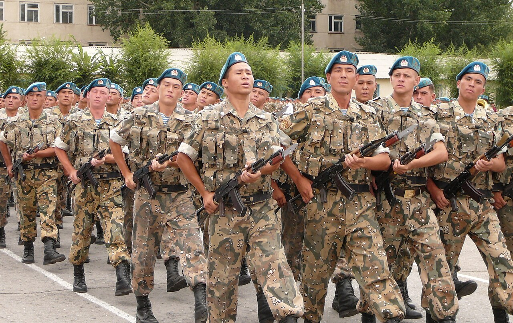

Саптық дайындық Drill & Tactical Строевая и тактическая подготовка
Дұрыс сап тұрысы, командалар және орнында бұрылыстар. Correct attention posture, commands and turns on the spot. Правильная строевая стойка, команды и повороты на месте.

Сап — әскери қызметшілердің жарғымен белгіленген аралық пен қашықтықты сақтап, бірлесіп тұруы немесе қозғалуы. Саптық дайындық сымбатты, ұқыптылықты, тәртіпті және бөлімшенің үйлесімді, бір кісідей әрекетін қалыптастырады. Әрбір саптық тәсіл екі бөліктен тұратын командамен орындалады: дайындау командасы (нені істеу) және орындау командасы (қашан істеу). A formation is the joint standing or movement of servicemen keeping the intervals and distances set by the regulations. Drill training develops bearing, neatness, discipline and the coordinated, single-bodied action of the unit. Every drill movement is performed on a command in two parts: the preparatory command (what to do) and the command of execution (when to do it). Строй — совместное стояние или движение военнослужащих с сохранением установленных уставом интервалов и дистанций. Строевая подготовка вырабатывает выправку, подтянутость, дисциплину и слаженность подразделения, действующего как единое целое. Каждый строевой приём выполняется по команде из двух частей: предварительной (что делать) и исполнительной (когда делать).
| ЭлементElementЭлемент | МағынасыMeaningЗначение |
|---|---|
| Майдан (фронт)FrontФронт | қызметшілер бетімен қараған жақthe side the servicemen faceсторона, в которую обращены лицом |
| Қанат (фланг)FlankФланг | саптың оң және сол шетіthe right and left ends of the formationправый и левый края строя |
| Аралық (интервал)IntervalИнтервал | бір шеру бойындағы көршілер арасы (≈ алақан ені)spacing between neighbours along a rank (≈ a palm's width)расстояние между соседями по фронту (≈ ширина ладони) |
| Қашықтық (дистанция)DistanceДистанция | шерулер немесе колоннадағылар арасындағы тереңдікthe depth between ranks or men in a columnрасстояние в глубину между шеренгами или в колонне |
| Шеру (шеренга)RankШеренга | бір сызықта қатар тұрған қызметшілерmen standing side by side in one lineвоеннослужащие, стоящие в одну линию |
| КолоннаColumnКолонна | бірінің артынан бірі тұрған сапa formation arranged one behind anotherстрой, где люди стоят в затылок друг другу |
«Сақ тұр» командасы бойынша қабылданады әрі барлық саптық тәсілдің негізі болып табылады. Taken on the command "Attention" and serving as the basis of every drill movement. Принимается по команде «Смирно» и является основой всех строевых приёмов.
| КомандаCommandКоманда | Мәні мен әрекетіMeaning and actionСмысл и действие |
|---|---|
| «Тұр»"Fall in"«Становись» | белгіленген орынға сапқа тұру, сап тұрысын қабылдауtake your appointed place in formation and assume attentionвстать на своё место в строй, принять строевую стойку |
| «Түзел»"Dress right"«Равняйсь» | басты оңға бұрып, кеуде сызығымен түзелу (солға түзеу — «Солға түзел»)turn the head right and align by chest line (left dress — "Dress left")повернуть голову вправо и выровняться по линии груди (налево — «Налево равняйсь») |
| «Сақ тұр»"Attention"«Смирно» | басты тіктеп, сап тұрысын қабылдап, қозғалыссыз тұруface front, assume attention and stand motionlessповернуть голову прямо, принять строевую стойку, замереть |
| «Еркін»"At ease"«Вольно» | бір аяқты босаңсытып, орнынан кетпей еркін тұруrelax one leg, stand easy without leaving your placeослабить одну ногу, стоять свободно, не сходя с места |
| «Жинақтал»"Tidy up"«Заправиться» | киім-кешек пен жарақты ретке келтіру (тек «Еркін»-нен кейін)put uniform and equipment in order (only after "At ease")привести в порядок форму и снаряжение (только после «Вольно») |
| «Бас тарт»"As you were"«Отставить» | қате орындалған тәсілді тоқтатып, алдыңғы қалыпқа қайтуcancel a wrongly performed movement and return to the previous stateотменить неверно выполненный приём, вернуться в прежнее положение |
«Оңға» және «Кругом» — оң өкше мен сол аяқ ұшымен; «Солға» — сол өкше мен оң аяқ ұшымен. «Кругом» — 180°, сол иық арқылы. Әр бұрылыс екі тәсілмен орындалады: "Right face" and "About face" are made on the right heel and left toe; "Left face" on the left heel and right toe. "About face" is 180°, over the left shoulder. Each turn is done in two counts: «Напра-ВО» и «Кру-ГОМ» выполняются на правой пятке и левом носке; «Нале-ВО» — на левой пятке и правом носке. «Кругом» — на 180°, через левое плечо. Каждый поворот делается в два приёма:
Саптық қадам — минутына 110–120 қадам, аяқ жерден 15–20 см көтеріліп, ұшы созылады; қадам ұзындығы 70–80 см. Жорық қадам жеңілірек әрі еркінірек. Командалар: «Саптық адыммен — МАРШ», «Жорық адыммен — МАРШ», «Тоқта». Drill step — 110–120 steps/min, foot raised 15–20 cm with the toe extended; step length 70–80 cm. The route step is lighter and freer. Commands: "Drill step — MARCH", "Route step — MARCH", "Halt". Строевой шаг — 110–120 шагов/мин, нога поднимается на 15–20 см с оттянутым носком; длина шага 70–80 см. Походный шаг легче и свободнее. Команды: «Строевым шагом — МАРШ», «Походным шагом — МАРШ», «Стой».
Орнында да, қозғалыста да беріледі. Бас киіммен — оң қолды бас киімге қою; бас киімсіз — басты бастыққа бұрып, сап тұрысын ұстау. Қозғалыста сәлемдесуден 3–4 қадам бұрын басты бұрып, тоқтамай өту. Rendered both at the halt and on the move. With headdress — raise the right hand to it; without headdress — turn the head toward the senior and hold attention. On the move, turn the head 3–4 paces before passing, without stopping. Отдаётся на месте и в движении. В головном уборе — приложить правую руку к нему; без убора — повернуть голову к начальнику, держа строевую стойку. В движении повернуть голову за 3–4 шага до начальника, не останавливаясь.